In this project I explored spatial filtering and frequency-domain thinking to build classical image processing effects from scratch. In Part 1, I implemented convolution, finite difference filters, and smoothed derivatives (DoG) to detect edges more robustly. In Part 2, I created frequency-based effects including sharpening, hybrid images, Gaussian/Laplacian stacks, and multi-resolution blending (the classic oraple!).
Overview
Part 1: Fun with Filters
Building intuition with 2D convolution, finite differences, and smoothed derivatives (DoG).
1.1 Convolutions from Scratch
Implemented 2D convolution with zero-padding using nested loops and verified against scipy.signal.convolve2d.
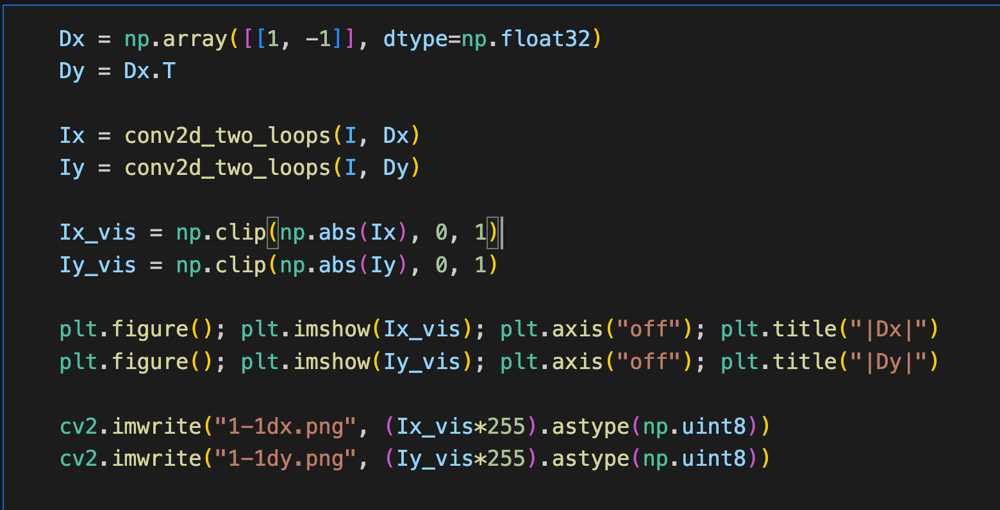
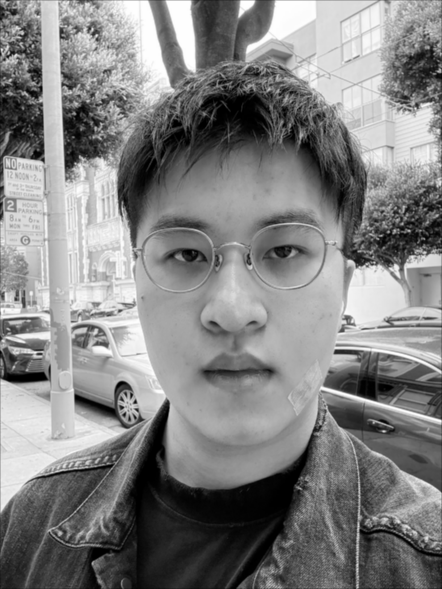
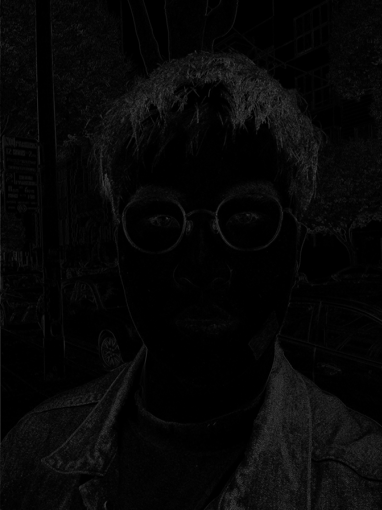
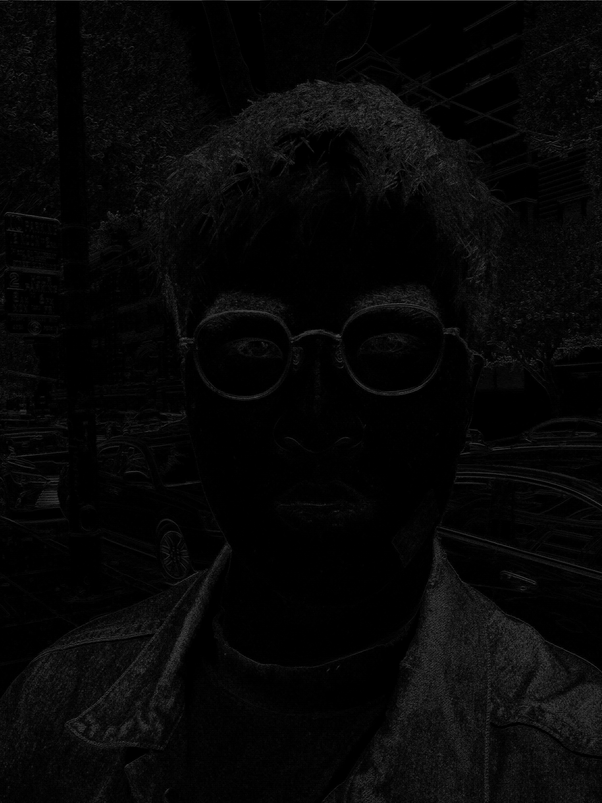
1.2 Finite Difference Operator
Computed partial derivatives, gradient magnitude, and a thresholded edge map on 1.2 test images.
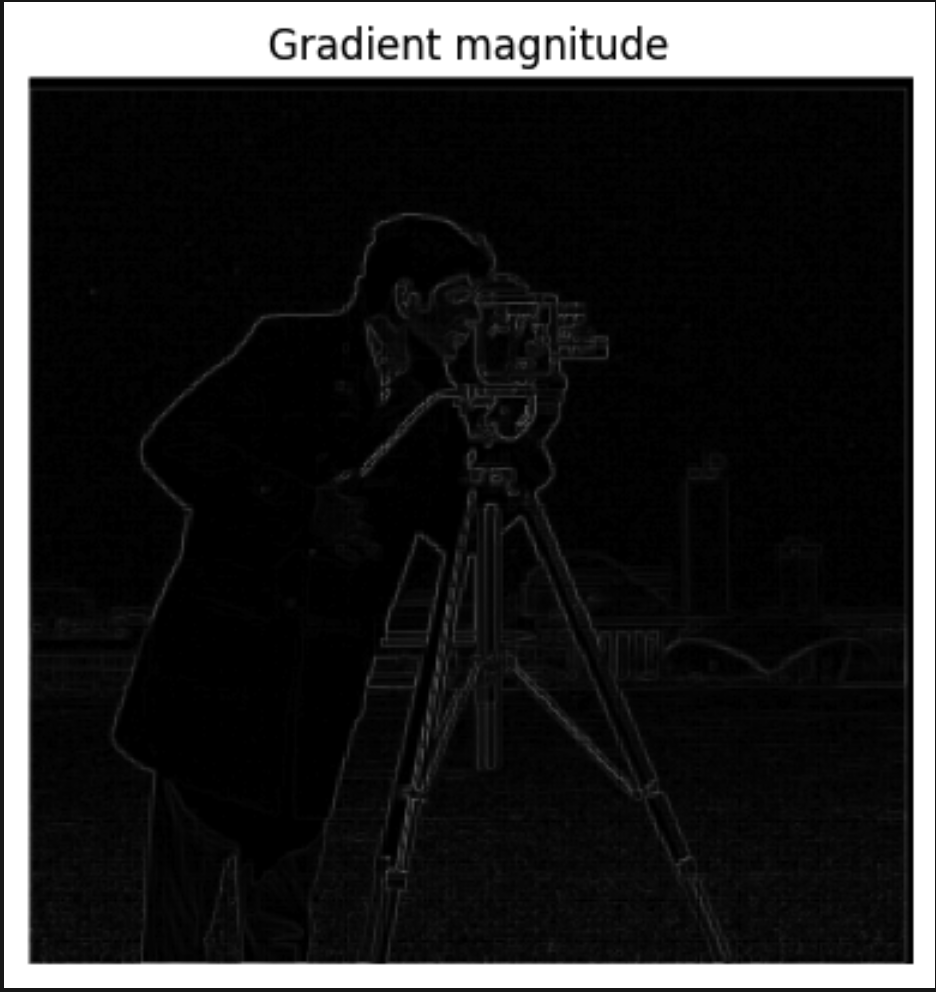

1.3 Derivative of Gaussian (DoG)
Applied Gaussian smoothing before differencing and built DoG filters to combine smoothing and differentiation in a single convolution.


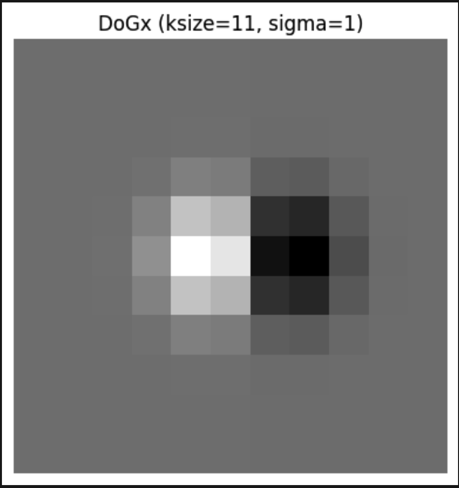
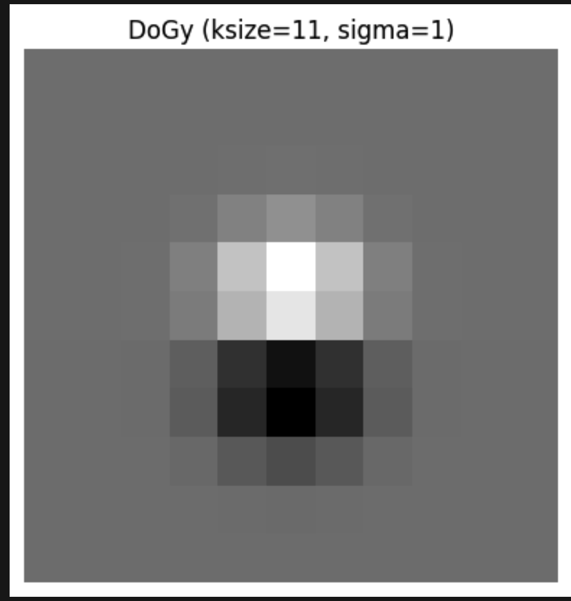
Part 2: Fun with Frequencies
Sharpening by boosting high frequencies, hybrid images, and multi-resolution blending using Gaussian/Laplacian stacks.
2.1 Image "Sharpening"
Used unsharp masking to add back high frequencies: sharp = img + alpha * (img - blur(img)).
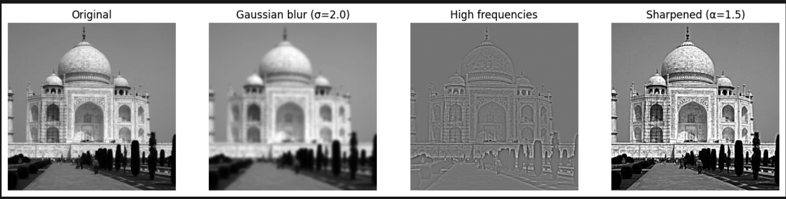


2.2 Hybrid Images
Combined low frequencies of image A with high frequencies of image B to form a hybrid. Parameters noted in the figures.
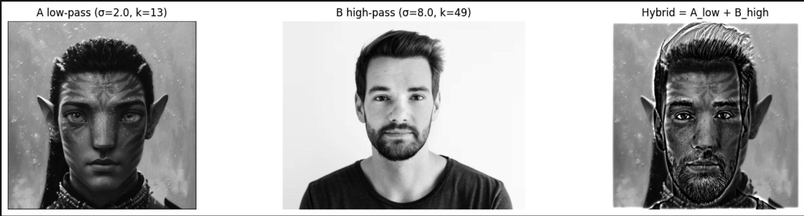
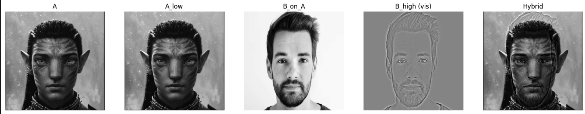

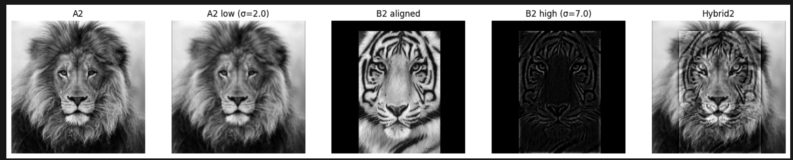

2.3 Gaussian and Laplacian Stacks
Constructed Gaussian/Laplacian stacks (no downsampling) to analyze band-limited structure for blending.
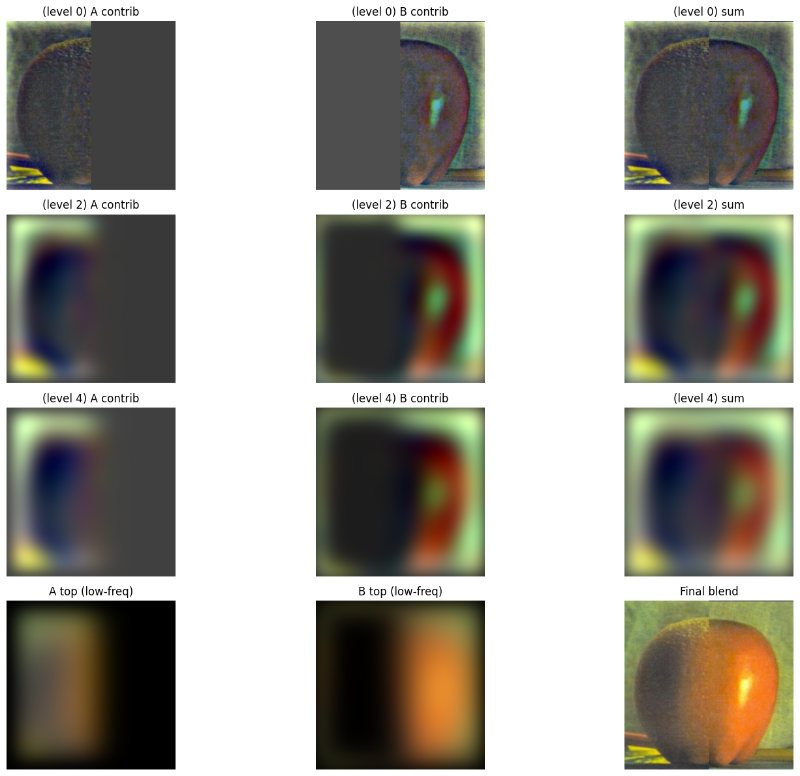
2.4 Multiresolution Blending (Oraple)
Blended images using Laplacian stacks with Gaussian-smoothed masks to achieve seamless transitions.
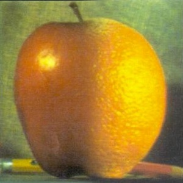
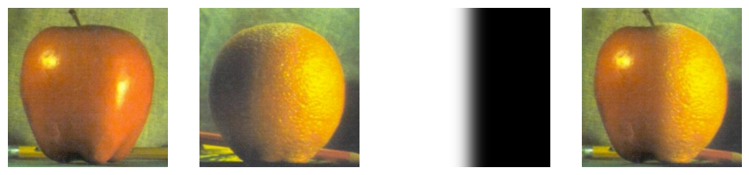
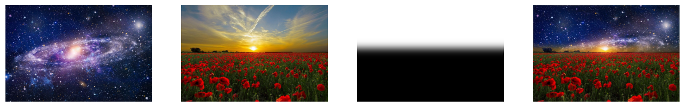
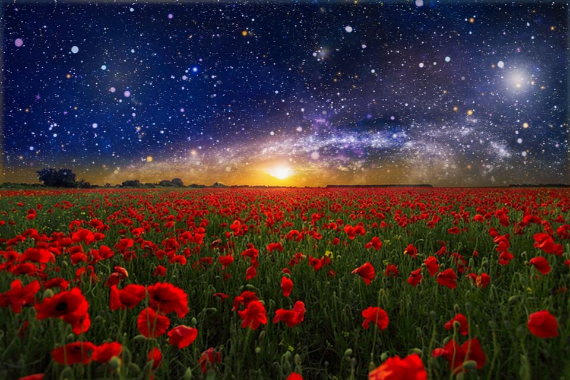
Challenges & Reflections
Choosing thresholds and parameters (Gaussian sigmas, mask blur, and hybrid cutoffs) had the biggest impact on result quality. I iterated on these while inspecting gradient magnitudes and FFTs to guide adjustments. Alignment and mask design were also critical for convincing hybrid images and blends.